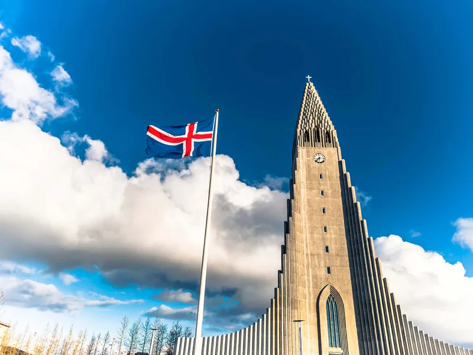
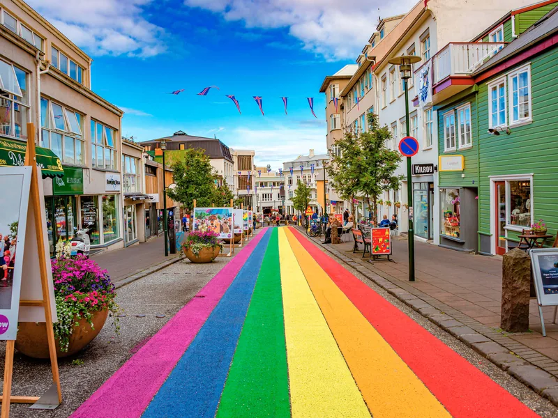

Reykjavik › Hallgrímskirkja
Hallgrímskirkja tower: tickets, hours, and when to go up
The church is free. The tower is not, it cannot be booked ahead, and in winter it stops letting people up at 16:45.
Two things about Hallgrímskirkja catch people out. The tower ticket cannot be bought in advance, from anyone, at any price. And from September to May the last trip up leaves at 16:45, which in December is well before most visitors have finished lunch.
Everything else is easy. The church itself is free to walk into, it sits at the top of the street you were going to climb anyway, and the whole stop takes about half an hour including the queue.
This page covers the tower: what it costs, when it is open, when it is shut for services, and whether the view is worth the money against the alternatives. It pairs with our one-day Reykjavik itinerary, where this tower is the fixed point the rest of the day bends around. If you want the story behind the building rather than the logistics, that is what the TouringBee audio walk is for.
At a glance
- Church entry
- Free
- Tower ticket
- 1,500 ISK adult · 200 ISK child 7–16 · 1,300 ISK student or disabled visitor
- Booking
- Not possible. Sold in the church shop, same day only
- Winter hours
- 1 Sep – 31 May: church 10:00–17:00, last tower 16:45
- Summer hours
- 1 Jun – 31 Aug: church 09:00–20:00, tower until 19:45
- How long
- About 30 minutes including the queue
- Getting up
- Lift most of the way, then a short flight of steps
- Height
- 73 m by the church's own reckoning — the tallest building in the city
The church is one stop on a longer walk
The TouringBee audio walk takes in Hallgrímskirkja and 26 other stops across the old centre — 2–2.5 hours, offline map and audio, at your own pace.
Reykjavik audio guide — €9.99What costs money and what doesn't
Hallgrímskirkja is a working Lutheran parish church, not a museum, and going inside is free during opening hours. You can sit in the nave, look at the organ, and leave without paying anything. The ticket is only for the tower.
| Tower ticket | Price |
|---|---|
| Adults | 1,500 ISK |
| Children 7–16 | 200 ISK |
| Students, disabled visitors (with ID) | 1,300 ISK |
| Seniors 67+ | Concession; the church does not publish the rate |
| Groups of 10 or more | 10% off |
| School groups, pupils 16 and under | Free |
You will find other numbers online. Reykjavik's own tourist portal was still listing 1,400 ISK and a 16:30 last entry when we checked in September 2026. Plenty of guides copy an older price table too — the church has left it sitting on its own site, above the current one. The figures above are what it charges now.
The hours, and the deadline
| Season | Church | Last trip up the tower |
|---|---|---|
| 1 September – 31 May | 10:00 – 17:00 | 16:45 |
| 1 June – 31 August | 09:00 – 20:00 | 19:45 |
That 16:45 is the number to plan around, because it does not move with the daylight. In late December the sun is gone by half past three anyway, so the tower and the last useful light run out together. In February it is still bright at 16:45 and people miss it because the sky does not look like closing time.
The other closures are less predictable. The church shuts to visitors during services, weddings, funerals and concerts, and it says so plainly: opening hours are subject to change. It also closes the viewing deck during certain events, and earlier than advertised when the deck gets crowded. Sunday mornings are the most reliable way to arrive and be turned away.
Buying the ticket
The shop is on your left as you come through the lobby. That is the only place tower tickets exist. The church's own wording is that it is not possible to reserve tickets for the tower in advance — no online sales, no timed slots, no skip-the-line.
Anything you see advertised online as a Hallgrímskirkja ticket is something else: a walking tour that stops outside, or a city pass that may or may not reimburse you. The ticket is valid once, on the day you buy it, so you cannot buy it in the morning and use it at dusk.
Going up
A lift takes you most of the way, and a short flight of steps covers the rest. The viewing deck is enclosed, with arched openings on all four sides rather than open air, which is why it still works on a day when the wind is taking umbrellas apart at street level.
The deck is small. In July the queue downstairs is the slow part, not the climb, and the church will hold people back rather than crowd the platform. Fifteen minutes up there is plenty.

What you actually see
Look west and you get the picture everyone comes for. Skólavörðustígur runs downhill in rainbow stripes, then the coloured metal roofs of the old centre stack up to the harbour, with the bay and Mount Esja behind. That is the view that justifies the ticket. It is also the one thing Perlan cannot give you: it sits too far out to look down on the roofs.
South and east are residential Reykjavik and, on a clear day, the Reykjanes peninsula. North is the harbour and the water. There is no bad side, but if you have one clear moment and a camera, take the west.
Light matters more than time of day here. In summer the low late sun does better than midday. In winter you are working with a narrow window either way, and an overcast day flattens the roofs into grey — which is worth knowing before you spend the 1,500 ISK on the wrong afternoon.
Inside, which costs nothing
The nave seats 1,200 and is deliberately plain: white, high, and almost empty of decoration. At the west end stands the Klais organ, built in Bonn and finished in 1992 — 5,275 pipes, 15 metres tall, about 25 tonnes. There is a second, smaller Frobenius organ from Denmark, rebuilt and reconsecrated in 2024. Organists fly in to record on the big one, and if a rehearsal is running when you walk in, stay for it.
The building took a long time. Guðjón Samúelsson, the state architect, won the commission in the 1930s and did not live to see it finished. Construction ran from 1945 to the consecration in 1986, and the congregation used the crypt for 26 years in between. The facade is usually described as basalt columns; the church itself compares it to columnar rock, Icelandic mountains and glaciers.
That comparison is the version every guidebook gives you. Why a state architect spent his career hunting for a specifically Icelandic style is a longer story, and the audio guide takes its time over it.
One more thing, out front. The statue on the plaza was standing here before the church was, and it was not Iceland's idea to put it there.
Tower or Perlan?
| Hallgrímskirkja | Perlan | |
|---|---|---|
| Where | Top of the old centre, walkable | On a hill outside the centre, bus or taxi |
| The view | Down onto the coloured roofs and the rainbow street | Wide panorama: bay, city, mountains |
| Deck | Enclosed, small | Open observation deck, plus exhibitions |
| Ticket | 1,500 ISK, door only | More; check the current price, it changes |
| Time cost | 30 minutes | Half a day with the trip out |
On a single day in the city, the tower wins on time alone. If you have two days and one of them is wet, Perlan is the better wet-day building, because there is something to do indoors.
The tower has no tickets to book — these do
Nothing can be reserved for Hallgrímskirkja itself. The things around it can be: Perlan, the lagoons and the guided tours that pass the church all sell timed entry in advance.
Reykjavik attraction tickets Compare city toursThree situations
You have a few hours between flights
The tower is the single best use of a short stop: it is a twenty-minute walk from the bus stop in the centre, and it gives you the whole city at once. Go straight there, then come down into the old centre rather than the other way round.
It is a Sunday
Morning services close the church to visitors. Come after lunch, and in winter that still leaves you comfortably inside the 16:45 deadline.
The weather has turned
Do not write the tower off. The deck is enclosed and the wind that ruins the street is not a problem up there. Low cloud is the real spoiler — if you cannot see Esja from ground level, you will not see much from 73 metres either.
The audio guide
Standing on the deck tells you what Reykjavik looks like. Why the city grew exactly here, what the statue outside is doing on that plaza, and what the architect was really building are different questions.

TouringBee Reykjavik audio guide
- Hallgrímskirkja is one of the 27 stops — the walk runs from the founding hill to the old harbour
- Works fully offline once downloaded — map and illustrations included
- Go at your own pace. Break for the tower and pick it up where you left off
- One payment. No group, no schedule, no guide waiting on you
Five mistakes
- Looking for tickets online. They do not exist. The shop inside the church is the only seller.
- Leaving it until late afternoon between September and May. 16:45 is the last trip up, whatever the sky is doing.
- Turning up on a Sunday morning. Services close the church to visitors.
- Trusting a price you read on a listings site. Several still show 1,400 ISK and a 16:30 cut-off.
- Going up in low cloud. If Esja is invisible from the street, save the ticket for tomorrow.
Common questions
How much does it cost to go up Hallgrímskirkja?
1,500 ISK for an adult and 200 ISK for a child aged 7 to 16. Students and disabled visitors pay 1,300 ISK; visitors aged 67 and over get a concession, though the church does not publish that amount. Groups of ten or more get 10% off, and school groups of under-16s go free. Walking into the church itself costs nothing — only the tower is ticketed.
Can I book Hallgrímskirkja tower tickets online?
No. The church states plainly that tower tickets cannot be reserved in advance. They are sold in the church shop, on your left as you come through the lobby, and they are valid once on the day you buy them. Anything sold online as a 'Hallgrímskirkja ticket' is a tour built around the church, not entry to the tower.
What time does the Hallgrímskirkja tower close?
From 1 September to 31 May the church closes at 17:00 and the last trip up the tower is 16:45. From 1 June to 31 August it is open until 20:00, with the tower until 19:45. Services, ceremonies and concerts close the church to visitors at other times, so check the day's notices before you build an afternoon around it.
Is Hallgrímskirkja worth it?
For the view, yes — it is the only high viewpoint in the old centre, and it is the one that shows you the coloured roofs from directly above. Twenty minutes and 1,500 ISK is a fair trade. If you want a wider panorama with the whole bay and the mountains, Perlan on its hill does that better, and it costs more.
Do you take a lift all the way up?
Almost. A lift carries you most of the height, then there is a short flight of steps to the viewing deck itself. The deck is enclosed, with openings on all four sides rather than open air, so it works in any weather. It is small, and the church closes it when it gets crowded.
Can you visit the church for free?
Yes. Hallgrímskirkja is a working parish church and walking in to look at the nave and the organ costs nothing during opening hours. You pay only if you want to go up. Services are open to anyone as well, but during them the building is not a sightseeing stop.
Continue exploring
- Reykjavik in one day — the itinerary this tower sits in the middle of
- Keflavík airport to the city — how to get in before any of this starts
- Sky Lagoon — prices, opening hours and what time to book
- The complete Reykjavik guide — the walk, the day trips and the seasons
- All Reykjavik guides — what is published and what is in the works
The short version
Walk in for free, pay 1,500 ISK at the shop if you want the view, and do it before 16:45 in winter. Look west for the roofs. Half an hour, and it is the best thirty minutes the old centre sells.
And if you would rather know what you are standing on top of than just look at it, take the TouringBee audio guide along: 27 stops through the centre, this one included, fully offline.
The church is stop one of twenty-seven
This page gets you up the tower at the right hour. The audio guide tells you what the city below you is.
Some links on this page are affiliate links — if you book through them we may earn a commission at no extra cost to you. Prices and opening hours were checked against hallgrimskirkja.is in September 2026 and change without notice; always confirm before you travel.